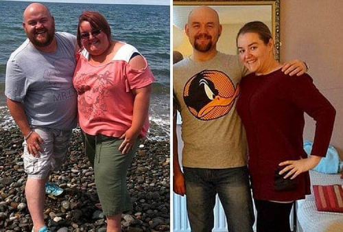

Kapsułki Slimjet spalamy nadmiar wagi raz i na zawsze


 14
14 80k
80kWśród ogromnego asortymentu produktów odchudzających, których na rynkach sprzedaży jest sporo, trudno jest decydować o środku, który okaże się najbardziej skuteczny.
Ale to jest bombowy środek: nowe kapsułki Slimjet Ten cudowny srodek po prostu magicznie rozpuszcza tłuszcz, usuwa nadmiar tkanki tłuszczowej i sprawia, że sylwetka jest szczupła. Jego główne zalety:
● nie powoduje skutków ubocznych;
● delikatnie zachęca organizm do spalania tłuszczu;
● wykazuje pozytywne wyniki;
Kapsułki Slimjet można porównać z produktem kosmicznym. Jest to srodek z nowej generacji: spalaj nagromadzony tłuszcz bez efektu jojo .
Co opowiada o kapsułkach Slimjet trener fitnessu z 20-letnim doświadczeniem Paweł Kołodziejski Slimjet trener fitnessu z 20-letnim doświadczeniem Paweł Kołodziejski

Kapsułki Slimjet magiczny środek dla tych, którzy monitorują swoją wagę i chcą schudnąć. Delikatnie działają na ciało, „pracują” wyłącznie w obszarach problemowych, dobrze stymulują pracę wszystkich narządów wewnętrznych i rozpoczynają proces samoregulacji. Polecam go osobom odwiedzającym moje fitness centrum i widzę doskonałe wyniki.
Dlaczego pan wybiera Kapsułki Slimjet? Bo teraz jest wiele podobnych preparatów? Próbowałem wielu produktów odchudzających. Mimo tego, że stale prowadzę aktywny tryb życia, moje ciało i tak magazynuje zbędne kilogramy. Dlatego czasami muszę pić zapobiegawczy specjalny środek na odchudzanie. I po niektórych lekach zaburzono czynność jelit. Inne miały takie skutki uboczne, jak łamliwe paznokcie i suche włosy. Niektóre leki działają tylko w momencie ich przyjęcia - tak, ciężar znika, ale jak tylko przestaniesz je stosować, to powracają dodatkowe kilogramy.
Dlatego kiedy przeczytałem instrukcje do Slimjet postanowiłem spróbować ten specyfik. I okazało się, że ten środek jest super skutecznym!
Stuprocentowa wydajność. Skuteczność tego specyfiku jest realna - badałem wskaźniki, które uzyskano podczas testów. Brak skutków ubocznych - szczególne podziękowania za to. Wielki szacunek dla producentów tego środka. W końcu nie chcesz schudnąć,kiedy inne organy twojego ciała mają przy tym efekt otrucia.
A kapsułki Slimjet nie dają skutków ubocznych.Jestem zachwycony tym efektem! Slimjet polecany nawet dla osób z chorobami przewlekłymi: nadciśnieniem, cukrzycą, alergiami. Mogę tak powiedzieć,że kapsułki Slimjet to właśnie przełom naukowców w tworzeniu nowych specyfików na odchudzanie.
Musiałem wprowadzić codzienną dietę i ograniczyć się szczególnie w spożywaniu wysokokalorycznych potraw. Jednak ogólna dieta pozostała prawie taka sama - podczas przyjmowania tabletek Slimjet nie muszę rezygnować z ulubionych potraw. Jednocześnie nigdy nie było uczucia głodu. Slimjet to bardzo skuteczny srodek!
Bardzo ważne jest to,że kapsułki Slimjet zawierają cały kompleks pożytecznych mikroelementów, witamin i aminokwasów niezbędnych dla organizmu. Stosowanie Slimjet wspomaga organizmu być zdrowym. Jest zarówno środkiem wyszczuplającym, jak i dobrym kompleksem multiwitaminowym.
Otyłość i problemowe miejsca
Tak,większość z tych co przyjmowali te kapsułki Slimjet, zauważyli, że poprawił się ogólny stan organizmu - zniknęło znużenie, szybkie zmęczenie. Dla wielu poprawiła się praca przewodu pokarmowego, sen stał się spokojniejszy i głębszy. Ale najważniejsze było to, że kilogramy zniknęły! Było to tak naturalnie, że wielu mówiło: Slimjet to panaceum! To jest znalezisko. To eliksir młodości!
I za jaki czas był widoczny efekt odchudzania?Działanie kapsułek Slimjet Efekt są zauważalny już w pierwszym tygodniu - minus kilogram lub dwa. Potem proces może nieco spowolnić, ale nie martw się. Faktem jest to, że ten lek działa łagodnie - powoli spala tłuszcz. Ale! - to najważniejsze! - spala je całkowicie. Wtedy nadwaga nie wraca. A jeśli po kursie specyfiku Slimjet nadal prawidłowo odzywiać się, wtedy możesz być spokojny, że utracone kilogramy nie wrócą ponownie. Nie wszystkie środki na odchudzanie mogą pochwalić się takim wynikiem. A Slimjet to po prostu wau!!!
Po co brać kapsułki Slimjet tym, którzy chodzą na siłownię? W końcu mają już dość dużą aktywność fizycznąNie zawsze przy pomocy ćwiczeń fizycznych można było pozbawić się problematycznych obszarów, powiedzmy, usunąć fałdy na brzuchu lub dodatkowe kilogramy na biodrach. A przy stosowaniu kapsułek Slimjet w połączeniu z aktywnością fizyczną pomaga szybciej spalać tkankę tłuszczową w problematycznych miejscach. I kształt mięśni podczas przyjmowania Slimjet staje się wyraźniejszy. Tak więc dla sportowców Slimjet idealny specyfik. Po prostu szczęście, że pojawił się taki środek.

klientka Adama,fitness instruktora-Dorota,29 lat,-19 kg w 2 mies.
Nie trać czasu na szukanie idealnego preparatu, bo to własnie on - Slimjet . To cudowny środek, który pomoże Ci szybko i skutecznie pozbyć się nadwagi.Szkoda słów - po prostu trzeba spróbować, i w jego skuteczności można się przekonać! Slimjet cudowny środek,rewelacija!
Fitness blogerka Anita tak ocenia kapsułki Slimjet
klientka Anity
Na moją siłownię przychodzi wiele ludzi otyłych, którzy chcą szybko i efektywnie schudnąć. Same ćwiczenia to czasami nie wystarczającą. Długo szukałam dla nich odpowiedniego środku, który byłby skuteczny i odpowiedni dla każdego. Kapsułki Slimjet to jest dokładnie ten środek, który jest uniwersalnym dla każdego. Najważniejsze, że nie ma żadnych skutków ubocznych.
Łatwe stosowanie szczegółowe instrukcje pozwalają dopasować sposób stosowania indywidualnie dla każdego.
Z przyjemnością obserwuję działanie tego specyfiku - kobiety w ciągu miesiąca łatwo pozbywają się od 5 do 8 kilogramów! A co najważniejsze, waga po odstawieniu preparatu nie rośnie.Nie ma efektu jojo.


Komentarze
Autor: Ania
Zaczeliśmy stosować kapsułki Slimjet W zeszłym roku mój mąż i ja przeszliśmy dwa kursy odchudzające, między pierwszym a drugim zrobiliśmy sobie 3-miesięczną przerwę, wyniki są po prostu doskonałe! Osobiście udało mi się w tym czasie pozbyć się 18 kilogramów, a mój mąż zrzucił 12.
Autor:Sylwia
Nie zauważyłam żadnych zmian na mojej figurze, jakieś oszustwo!
Autor:Administrator
Dzień dobry,pani Sylwio kapsułki Slimjet wykazują doskonałe wyniki, o czym świadczą nasze badania przeprowadzone wśród konsumentów, którzy je zaakceptowali. Preparat przeszedł prawdziwe badania kliniczne, posiada niezbędne certyfikaty. Fakt, że nie wpłynęły one na pani organizm, mogę tylko sugerować, że wybrano niewłaściwą dawkę lub schemat dawkowania.Albo zaczęła pani więcej jeść,spodziewając się na działanie kapsułek. Przeczyta pani ponownie instrukcje dotyczące przyjmowania tabletek Slimjet i sprawdźi pani swoją dietę. I powtórzy pani kuracije - efekt na pewno będzie.
Autor: Sylwia
Tak, dziękuję, naprawdę nie prawidłowo stosowałam ten preparat. Tak, teraz waga zaczęła się zmniejszać!
Autor: Małgożata
Brałam kapsułki przez 10 dni, waga zaczęła się zmniejszać, a kiedy zrezygnowałam z przyjmowania, ponownie wróciły tę kilogramy. Dlaczego?
Autor: Administrator
Dzień dobry, pani Małgożato. 10 dni to zbyt krótki okres, aby osiągnąć dobre wyniki. Kapsułki Slimjet mają łagodny wpływ na organizm i należy je przyjmować przez co najmniej miesiąc. Ukończy pani pełny kurs odnowy biologicznej, a osiągnie pani swój cel. Po 4-5 miesiącach zalecamy do powtórnej kuracii Slimjet.
Autor: Mikołaj
Jeśli to panaceum, to dlaczego wszyscy wokół mają nadwagę?
Autor: Administrator
Dzień dobry, panie Mikołaju. To nie jest tak, proszę pana - jest więcej osób o normalnej wadze. I ci, którzy mieli nadwagę po stosowaniu kapsułek Slimjet dołączyli do ich grona. Ale najlepszym lekarstwem na wszystkie pana wątpliwości jest próba stosowania od pierwszej ręki kapsułek Slimjet.